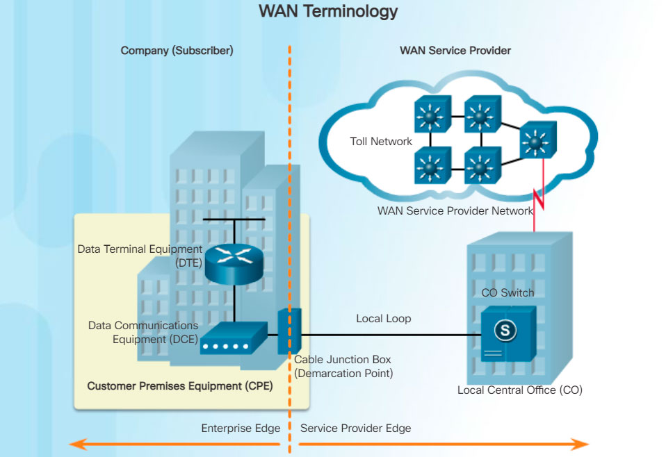

One primary difference between a WAN and a LAN is that a company or organization must subscribe to an outside WAN service provider to use WAN carrier network services. A WAN uses data links provided by carrier services to access the Internet and connect different locations of an organization to each other. These data links also connect to locations of other organizations, to external services, and to remote users.
The physical layer of a WAN describes the physical connections between the company network and the service provider network.

The figure illustrates the terminology commonly used to describe WAN connections:
- Customer Premises Equipment (CPE) - The CPE consists of the devices and inside wiring located on the enterprise edge connecting to a carrier link. The subscriber either owns the CPE or leases the CPE from the service provider. A subscriber, in this context, is a company that arranges for WAN services from a service provider.
- Data Communications Equipment (DCE) - Also called data circuit-terminating equipment, the DCE consists of devices that put data on the local loop. The DCE primarily provides an interface to connect subscribers to a communication link on the WAN cloud.
- Data Terminal Equipment (DTE) - The customer devices that pass the data from a customer network or host computer for transmission over the WAN. The DTE connects to the local loop through the DCE.
- Demarcation Point – This is a point established in a building or complex to separate customer equipment from service provider equipment. Physically, the demarcation point is the cabling junction box, located on the customer premises, that connects the CPE wiring to the local loop. It is usually placed for easy access by a technician. The demarcation point is the place where the responsibility for the connection changes from the user to the service provider. When problems arise, it is necessary to determine whether the user or the service provider is responsible for troubleshooting or repair.
- Local Loop - The actual copper or fiber cable that connects the CPE to the CO of the service provider. The local loop is also sometimes called the “last-mile”.
- Central Office (CO) - The CO is the local service provider facility or building that connects the CPE to the provider network.
- Toll network - This consists of the long-haul, all-digital, fiber-optic communications lines, switches, routers, and other equipment inside the WAN provider network.